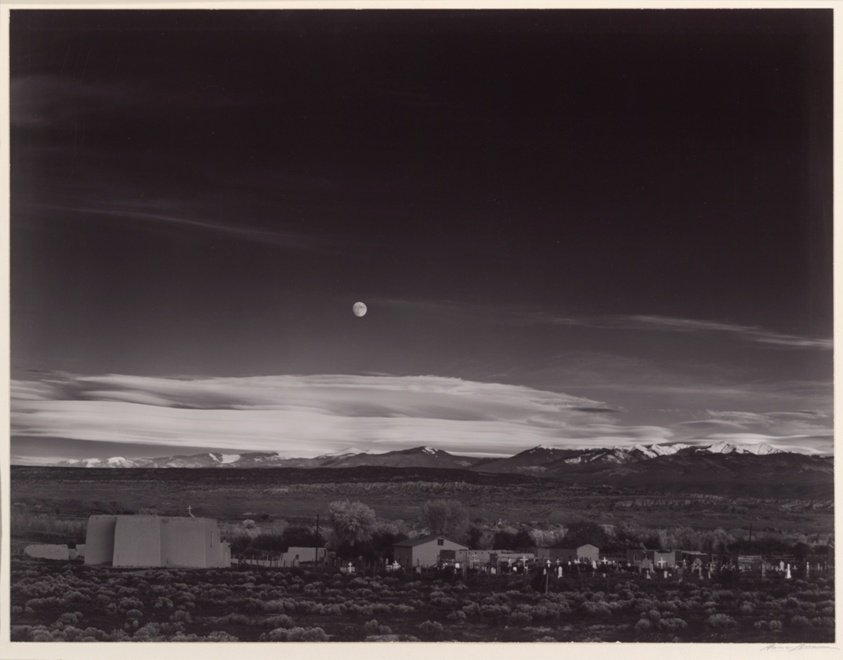

Moonrise, Hernandez, New Mexico
Ansel Adams · 1941 · Gelatin silver print · 36.9 × 48.1 cm · Art Institute of Chicago
In copyright. Look and learn: shown for study, not for download.
Adams was on a six-month commission from the Department of the Interior, driving with his son Michael and his friend Cedric Wright, when they stopped on the highway at Hernandez. By his later account he could not find his exposure meter and worked out the exposure from the brightness of the moon; as he turned the film holder for a second negative, the light left the crosses. He never knew the date. In 1991 Dennis di Cicco of Sky & Telescope fixed it at 4:49:20 p.m. on 1 November 1941. Adams made more than 1,300 prints of it.